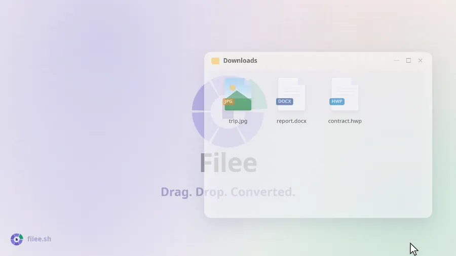
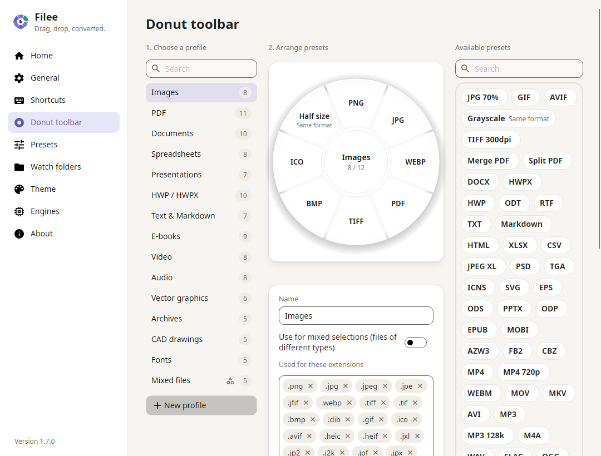
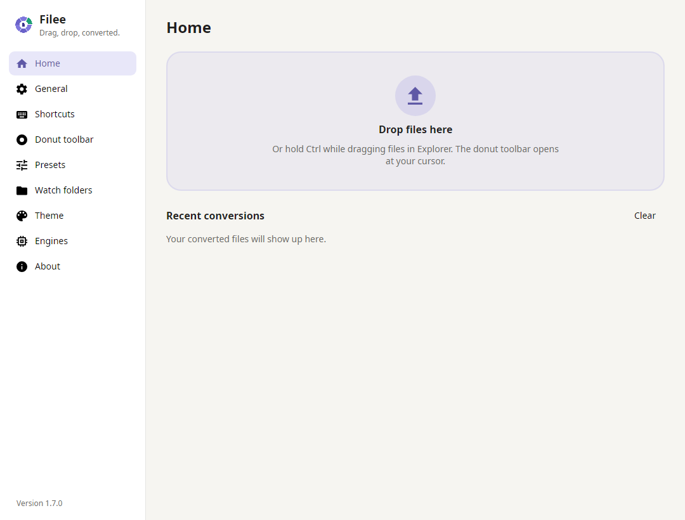

Бесплатный конвертер файлов с открытым кодом, которым пользуются перетаскиванием.
Зажмите клавишу (Ctrl, на macOS Option), перетащите файлы и отпустите их на нужный формат в круговом меню, которое откроется у курсора.
Сайт · Скачать · LinkedIn · Установка · Командная строка · Для разработчиков


English · Español · 日本語 · 한국어 · 简体中文 · 繁體中文 · Polski · हिन्दी · Русский · العربية · Português (Brasil) · Português (Portugal) · Français · ไทย
|
Прямо у курсора Не нужно открывать окно программы. Форматы появляются там, где вы уже работаете, и только те, что подходят перетаскиваемым файлам. |
267 форматов без лишних программ Изображения, PDF, Word, Excel, PowerPoint, HWP, электронные книги, архивы, шрифты, чертежи CAD, 3D-модели и геоданные работают без Office, Hancom Office и LibreOffice. |
Всё остаётся на вашем компьютере Ничего не загружается в сеть. Filee работает офлайн и сохраняет результат рядом с исходным файлом. |
Как это работает

Посмотрите 27-секундное видео и попробуйте интерактивное демо на filee.sh
Установка
Скачайте со страницы Releases.
- Windows 10/11: запустите
Filee-<version>-win-Setup.exeили распакуйтеwin-Portable.zipи запуститеFilee.exe.- Setup — собственный установщик Filee: он говорит на тех же языках, что и Filee, и ничего не требует от компьютера.
- Он может добавить пункт в меню Проводника, автозапуск при входе в систему, команду
fileeи дополнительные движки. - Для тихой установки подходят ключи Inno Setup (
/VERYSILENT /SUPPRESSMSGBOXES).
- macOS 13+ (предварительная версия): распакуйте пакет
osx-arm64илиosx-x64и запустите./install.sh.- Или откройте
.dmgи перетащите Filee в «Программы» (командуfileeдобавляет толькоinstall.sh). - Сборка пока не нотаризована, поэтому при первом запуске разрешите её в Системных настройках → Конфиденциальность и безопасность → Всё равно открыть.
- Или откройте
- Linux x64/ARM64 (Ubuntu 22.04+): распакуйте пакет и запустите
./install.sh(права root не нужны, требуется Python 3).- Жесты перетаскивания работают только в X11. В Wayland пользуйтесь зоной перетаскивания и контекстным меню файлового менеджера.
Filee сообщает о новых версиях в своём меню и обновляется сам, сохраняя ваши настройки и движки. После обновления несколько слайдов расскажут, что нового.
Windows: Filee не запускается (ни окна, ни ошибки)? Так бывает в давно не обновлявшейся Windows 10 на ПК, процессор которого поддерживает аппаратную защиту стека (CET). Windows включает эту защиту, но в ней нет компонента, нужного .NET, поэтому Filee и Setup сразу закрываются.
- Рекомендуется: установите доступные обновления Windows (последнее накопительное обновление).
- Если обновить Windows нельзя: обычно достаточно отключить защиту только для Filee. Выполните в PowerShell от имени администратора:
Set-ProcessMitigation -Name Filee.exe -Disable UserShadowStack
Set-ProcessMitigation -Name filee-cli.exe -Disable UserShadowStack
То же сделайте с именем файла Setup (например, Filee-<version>-win-Setup.exe) или возьмите портативный ZIP: ему хватит этих двух строк.
Чтобы отменить это, удалите эти записи в «Безопасность Windows» → «Управление приложениями/браузером» → «Параметры защиты от эксплойтов» → «Параметры программ».
Возможности
- Круговое меню у курсора: зажмите клавишу, перетащите файлы и отпустите их на формат. Показываются только форматы, подходящие этим файлам.
- Прямо из браузера: так же перетаскиваются картинка, ссылка на файл или загрузка из Chrome, Edge, Firefox или Safari.
- Filee сохраняет файл в папку «Загрузки» (или оставляет только сконвертированный) и конвертирует его.
- Ссылки скачиваются без входа в аккаунт из вашего браузера.
- Своё круговое меню для каждого типа файлов, настраивается перетаскиванием, с пресетами для:
- качества, размера, DPI
- страниц и сжатия PDF
- видео и аудио
- папки сохранения и имён файлов
- У каждого кругового меню две стороны: когда меню открыто, нажмите Tab или прокрутите колесо мыши, чтобы перевернуть его к редким форматам и инструментам.
- Обрезка перед конвертацией: сектор «Обрезать» открывает картинки по одной. Перетащите рамку, выберите пропорции, и сохранится только эта часть.
- Много файлов сразу, параллельно. Конвертации в несколько шагов (HWP → HWPX → DOCX) Filee находит сам.
- Папки наблюдения конвертируют каждый файл, который в них попадает.
- Недавние конвертации на главной, у каждой миниатюра: результат можно открыть («Открыть файл») или открыть в другой программе («Открыть с помощью»).
- Другие способы: контекстное меню, горячая клавиша, зона перетаскивания и команда
filee. - Светлая и тёмная темы со своим акцентным цветом и непрозрачностью кругового меню, интерфейс на языках English, Español, 日本語, 한국어, 简体中文, 繁體中文, Polski, हिन्दी, Русский, العربية (справа налево), Português (Brasil), Français, नेपाली, ไทย, Türkçe, Português (Portugal) и Deutsch.
Скриншоты
 |
 |
| Настраивайте круговое меню перетаскиванием, по профилю на каждый тип файлов | Главная: зона перетаскивания и недавние конвертации |
Форматы
| Из | В |
|---|---|
| Изображения: JPG, PNG, WEBP, AVIF, TIFF, BMP, GIF, APNG, ICO, ICNS, JPEG XL, JPEG 2000, PSD/PSB, TGA, PPM, HEIC, QOI, DDS, PCX, MNG, CUR, …; GIMP XCF, RAW с камер (CR2, CR3, NEF, ARW, DNG, …), DICOM, OpenEXR, HDR, FITS, JPEG XR (Windows), Live Photo iPhone (LIVP) только чтение |
любой из них (HEIC⁵), PDF, SVG (трассировка), изменение размера, оттенки серого; Live/Motion Photo (iPhone, Android) → их видео (MP4, MOV⁵), а видео → Live Photo (iPhone) или Motion Photo (Android)⁵, экспериментально |
| Векторная графика: SVG, SVGZ, EMF, WMF, AI EPS, PS¹ CDR, VSD, CGM, ODG, FODG² |
PDF (векторный), PNG и другие изображения, SVG ↔ SVGZ, SVG → DXF/DWG, PDF → EPS/PS¹, SVG → EMF, WMF, ODG² |
| DOCX, HWPX, TXT, PNG, JPG, TIFF, CBZ, PPTX (каждая страница картинкой), SVG²; объединение (в выбранном заранее порядке), разделение, диапазоны страниц, сжатие (PDF меньше по размеру) |
|
| Документы: DOCX, DOCM, DOTX, EML, Outlook MSG; OFD (китайские электронные счета, официальные документы) только чтение DOC, ODT, FODT, OTT, RTF, WPS, WPD, Pages, ClarisWorks, MacWrite, T602, …² |
PDF, DOCX, HWPX, EPUB, TXT, HTML; MSG → EML ODT, FODT, OTT² |
| Таблицы: XLSX, XLSM, XLS, XLT, ODS, CSV, TSV OTS, FODS, Numbers, ET² |
PDF, XLSX, ODS, CSV, TSV, JSON, HWPX, HTML XLT, OTS² |
| Презентации: PPTX, PPTM, POTX, POTM, PPSX PPT, ODP, OTP, FODP, Keynote² |
PDF, PNG, JPG, DOCX, HWPX OTP² |
| HWP: HWP, HWPX | PDF, PNG, DOCX, HWPX ↔ HWP, TXT, Markdown, HTML |
| Текст: TXT, LOG, исходники скриптов (PY, PAC, BAT, COMMAND; только чтение, без запуска), Markdown, HTML; MHTML (сохранённые веб-страницы) только чтение reStructuredText, LaTeX, Org, AsciiDoc, Typst, MediaWiki, DocBook, Jupyter, Textile, man, OPML³ |
TXT в UTF-8, PDF, DOCX, HWPX, EPUB друг в друга, слайды PPTX³ |
| Электронные книги: EPUB, KEPUB, MOBI, AZW3, AZW, AZW4, FB2, CBZ, CBR, CB7, HTMLZ, TXTZ LIT, LRF, CHM, PDB, …⁴ |
PDF, EPUB, KEPUB (Kobo), DOCX, TXT, HTML, HWPX MOBI, AZW3⁴ |
| Видео⁵: MP4, MOV, MKV, WEBM, AVI, WMV, FLV, MPEG, Video CD (DAT), TS, M2TS, 3GP, OGV, VOB, … | MP4 (H.264, HEVC, AV1), WEBM, MOV, MKV, AVI, GIF, APNG, MP3, M4A, 720p, субтитры (SRT, ASS, WebVTT) |
| Аудио⁵: MP3, M4A, AAC, WAV, FLAC, OGG, OPUS, WMA, AIFF, AMR, APE, WavPack, TTA, DSD (DSF, DFF), DTS, AC3, E-AC3, … | MP3, M4A (AAC, ALAC), WAV, FLAC, OGG, OPUS, AAC, WavPack, TTA, W64, AC3, E-AC3 |
| Субтитры: SRT, ASS/SSA, WebVTT, SAMI (SMI), LRC, TTML, MicroDVD, SCC | друг в друга, в UTF-8 (корейские файлы в CP949 читаются правильно) |
| Архивы: ZIP, ANSYS Workbench (WBPZ), 7Z, RAR, TAR, TAR.GZ, TAR.BZ2, TAR.XZ, GZ, ISO, CAB, DMG, ALZ, EGG, … | распаковка, ZIP, 7Z, TAR, TAR.GZ; любые файлы → один ZIP |
| CAD: DWG, DXF | PDF, SVG, PNG, DWG ↔ DXF |
| Шрифты: TTF, OTF, WOFF, WOFF2, EOT; FON (растровые шрифты Windows) только чтение |
преобразование друг в друга; FON → один файл на размер |
| Данные: JSON, JSON Lines, YAML, TOML, XML vCard, iCalendar |
друг в друга, CSV и XLSX (таблицы); vCard, iCalendar ↔ CSV |
| 3D-модели: GLB, glTF, STL, OBJ (+ MTL), 3MF, PLY; FBX только чтение |
друг в друга, превью в PNG |
| Геоданные (векторные): Shapefile, GeoJSON, KML, KMZ, GPX CSV с координатами; Garmin FIT только чтение |
друг в друга и CSV / XLSX / JSON; данные в проекциях (UTM, Web Mercator, Ламберта, Альберса) переводятся в долготу / широту WGS 84 |
Форматы без пометки работают сразу, без Office, Hancom Office и LibreOffice. Для помеченных нужен дополнительный движок, который скачивается только при необходимости: ¹ Ghostscript, ² LibreOffice, ³ Pandoc, ⁴ calibre, ⁵ FFmpeg (подробнее).
Командная строка
Команда filee использует те же движки и пресеты, что и приложение (её добавляет установщик или install.sh).
filee convert photo.heic --to jpg
filee convert *.png --to webp --quality 80 -o converted
filee watch D:\Inbox --to pdf --move-originals
Все команды и параметры: filee.sh/cli или filee help.
Для разработчиков
Соберите проект с .NET 10 SDK на Windows, macOS или Linux:
git clone https://github.com/KnifeLemon/Filee.git
cd Filee
pwsh build/fetch-engines.ps1 -Only rhwp,pandoc # optional engines
dotnet run --project src/Filee.App
dotnet test
Архитектура · Движки · Как добавить конвертер · Как добавить язык · Участие в разработке
Пул-реквесты приветствуются. Если Filee экономит вам пару кликов, поставьте ⭐: так другие смогут его найти.
Подпись кода
Filee разрабатывает и публикует Myeonggu Kim (KnifeLemon).
- Выпуски для Windows подписываются сертификатом Certum для подписи кода open source, выданным на имя Myeonggu Kim.
- Выпуски до 2.0.0 включительно не подписаны.
Полные правила и политику конфиденциальности смотрите в английском README. Filee не отправляет ни ваши файлы, ни данные об использовании.
Поддержать проект
Filee бесплатный и останется бесплатным. Если хотите его поддержать, выберите удобный способ (Fairy принимает корейские карты и платёжные сервисы).
Здесь может быть ваше имя или логотип. Тех, кто поддерживает проект ежемесячно, мы перечисляем здесь по имени, а логотипы спонсоров размещаем здесь и в разделе «О программе» в Filee. Если вы помогли разово, тоже можете попросить добавить вас в список.
Лицензия
MIT, © 2026 Myeonggu Kim (KnifeLemon) и участники проекта Filee. Сторонние компоненты в комплекте распространяются под собственными лицензиями, перечисленными в THIRD-PARTY-NOTICES.md.